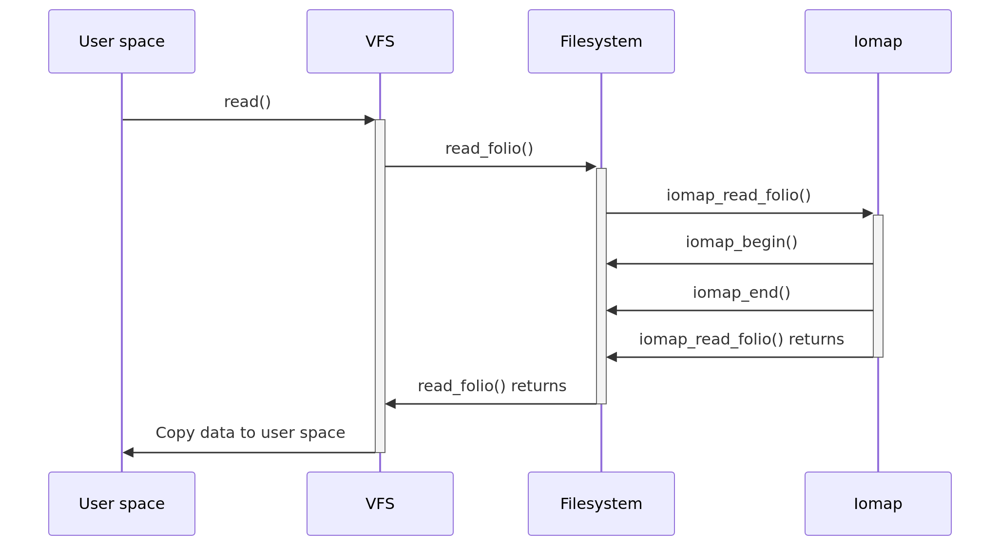

The kernel's iomap layer
The iomap code was first introduced as such by Christoph Hellwig for the 4.8 kernel release in late 2016, but much of that functionality was based on an earlier implementation by Dave Chinner in the XFS filesystem. It has grown over the years as filesystems have been converted over and new functionality has been added. The current implementation consists of a dozen files in the fs/iomap directory. It is implemented as two broad layers, a low-level mapping between files and their backing store, which is used by higher-level code to implement much of the functionality that a filesystem needs.
The storage mapping
Every file implemented by a filesystem, with few exceptions, is a representation of a series of bytes stored on a persistent medium somewhere. Much of the work a filesystem comes down to implementing operations expressed in terms of files and offsets by moving data between memory and that persistent media. A key part of this task is managing the mapping between those two domains.
In the earlier days of Linux, this mapping was represented by buffer heads, but they suffer from a number of problems. As a direct mapping between a disk block and an equally sized region of memory, buffer heads are not designed for today's large files and extent-based filesystems. It is difficult to generate large, efficient I/O operations when the data involved is represented by buffer heads. A single contiguous extent on disk might require hundreds of buffer heads, each managing a single block, which must be reassembled into a small number of I/O operations.
With iomap, a mapping that might have involved a large number of buffer heads can, instead, be expressed with a single iomap structure:
struct iomap {
u64 addr; /* disk offset of mapping, bytes */
loff_t offset; /* file offset of mapping, bytes */
u64 length; /* length of mapping, bytes */
u16 type; /* type of mapping */
u16 flags; /* flags for mapping */
struct block_device *bdev; /* block device for I/O */
struct dax_device *dax_dev; /* dax_dev for dax operations */
void *inline_data;
void *private; /* filesystem private */
u64 validity_cookie; /* used with .iomap_valid() */
};
To simplify things a bit, an instance of this structure says that the range of a file starting at offset bytes and continuing for length bytes is stored at addr on the underlying device which, in turn, is identified by bdev (for normal block devices), dax_dev (for persistent-memory DAX devices), or the memory range at inline_data. The type field describes what kind of mapping is actually represented:
- IOMAP_MAPPED indicates a normal mapping from the file to space on the persistent storage device.
- IOMAP_INLINE, instead, is a mapping between the file and the memory pointed to by inline_data. This sort of mapping might be used for tiny files where the file data can be stored in the file inode itself.
- IOMAP_HOLE means that the underlying storage has not been allocated — that there is no mapping at all. It is only valid for read operations, and the result is that a read from this range will return zeroes.
- IOMAP_DELALLOC also says that the mapping does not exist, but that it will be created at a future time.
- IOMAP_UNWRITTEN says that the mapping exists, but that the backing store has not been written and may contain random (or sensitive) data. Reads from this range will return zeros rather than going to the backing store.
There is an extensive set of flags that can be set by the filesystem to affect how the I/O is done, mark a shared mapping that must be copied on write, and more.
These iomap structures must be filled in by the filesystem implementation in response to requests from the iomap layer. Those requests will be received by way of a couple of callbacks supplied by the filesystem:
struct iomap_ops {
/*
* Return the existing mapping at pos, or reserve space starting at
* pos for up to length, as long as we can do it as a single mapping.
* The actual length is returned in iomap->length.
*/
int (*iomap_begin)(struct inode *inode, loff_t pos, loff_t length,
unsigned flags, struct iomap *iomap,
struct iomap *srcmap);
/*
* Commit and/or unreserve space previous allocated using iomap_begin.
* Written indicates the length of the successful write operation which
* needs to be commited, while the rest needs to be unreserved.
* Written might be zero if no data was written.
*/
int (*iomap_end)(struct inode *inode, loff_t pos, loff_t length,
ssize_t written, unsigned flags, struct iomap *iomap);
};
Before an operation starts, iomap_begin() will be called to inform the filesystem that the indicated region of the file is about to be read or written. The file involved is identified by inode, with pos and length indicating the range of the file that the operation will affect. The flags parameter has a number of options describing what is about to happen, including:
- IOMAP_WRITE: the given range will be written to, so space must be allocated (if not already present). The absence of this flag implies a read operation.
- IOMAP_ZERO: zero out a range of the file.
- IOMAP_DIRECT: a direct-I/O operation, avoiding the page cache, is called for.
The iomap_begin() function must fill in the provided iomap structure with a suitable mapping for at least the first byte of the requested operation; obviously, it is better to map a much larger range if that can be done with a single mapping. The srcmap parameter exists for cases where data for the operation (imagine a small write that requires reading a block before writing a portion of it) must be read from a different device.
The iomap_end() function will be called when the operation completes; the written parameter will contain the number of bytes that were actually written. This callback is to allow filesystems to clean up after an operation, account for allocated blocks, and release any blocks that were not actually written.
Filesystem I/O
The mappings as described above are only useful if the kernel can use them to actually perform I/O and implement filesystem functionality in general. Iomap provides a lot of functions that can help in this regard; they are, as a general rule, immaculately undocumented, requiring filesystem developers to dig through the source to discover them and figure out how to use them. Whether this state of affairs might have slowed the iomap conversion is left for the reader to conclude.
Filling in all of that documentation is rather beyond the scope of what this article can achieve, but an example can be illustrative. Consider the case of buffered reads. If an application calls read() on a file, there are a number of things that need to happen, including allocating space in the page cache, locating the data on disk, reading the data into the page cache, and copying it to the user-space buffer. The kernel's virtual filesystem layer handles many of those details, but there are pieces that the filesystem must implement.
For buffered I/O, the filesystem must provide a struct address_space_operations with a number of callbacks to implement specific operations. One of those, used for read operations, is read_folio():
int (*read_folio)(struct file *file, struct folio *folio);
The folio structure describes the memory into which the data should be read; it also contains the details of the file that the folio maps, the folio's offset within the file, and its length. The filesystem should respond by performing the actual read and marking the folio as being current. That might involve performing several I/O operations if the folio spans multiple, non-contiguous blocks on the backing device.
A filesystem implementation can implement most of the work of read_folio() with a call to iomap_read_folio(), but it is not quite that simple; there is a certain amount of glue that must be applied in the filesystem's read_folio() callback first. That includes the definition of an iomap_read_ops structure:
struct iomap_read_ops {
int (*read_folio_range)(const struct iomap_iter *iter,
struct iomap_read_folio_ctx *ctx, size_t len);
void (*submit_read)(const struct iomap_iter *iter,
struct iomap_read_folio_ctx *ctx);
/* ... */
};
The read_folio_range() operation will do the work of creating a single read operation, perhaps only covering a portion of a larger request. If read_folio_range() is synchronous, there is no need for a submit_read() callback; otherwise that function should be provided to actually start the read operations. The arguments to both functions are an iomap_iter structure that contains, among other things, the current read position, and the ctx argument, which is an instance of this structure type:
struct iomap_read_folio_ctx {
const struct iomap_read_ops *ops;
struct folio *cur_folio;
struct readahead_control *rac;
void *read_ctx;
loff_t read_ctx_file_offset;
};
This structure should be created in the filesystem's read_folio() implementation; cur_folio should be set to the folio argument passed in, and ops to the filesystem's iomap_read_ops structure. Happily, many filesystems do not actually have to create their own iomap_read_ops; the iomap layer has implementations of its own for the common cases. So, for example, a disk-based filesystem could use iomap_bio_read_ops rather than supplying its own.
With the appropriate structures in place, a read_folio() implementation comes down to a call to iomap_read_folio():
void iomap_read_folio(const struct iomap_ops *ops,
struct iomap_read_folio_ctx *ctx,
void *private);
Here, the ops structure is, finally, the set of mapping operations that were described some time back. The iomap layer will use those operations to map the read onto one or more ranges in the file's backing store, then use the provided read operations to read those ranges into the provided folio.
The above sequence of calls looks something like this:

The iomap layer hides a lot of the complexity that comes with implementing a filesystem, but a fair amount still leaks through; much of it has been craftily glossed over here. For example, the readahead_control structure in struct iomap_read_folio_ctx provides the parameters for readahead operations, which may bring in a set of blocks speculatively in the hope of accelerating future reads.
Buffered-write operations are implemented, in struct address_space_operations, by the writepages() callback. There is a similar impedance-matching task to be done here. The iomap_writeback_ops structure provides a set of low-level callbacks to implement writes; that should be stored in an iomap_writepage_ctx structure, then passed to iomap_writepages().
Many other filesystem operations have iomap support; these include direct I/O, DAX I/O, seeking within files, handling page faults, file truncation, swap-file activation, and more. The above snide comments notwithstanding, there is some documentation for iomap included with the kernel; it was added to the 6.11 release by Darrick Wong, who was drawing on work from a number of developers.
In conclusion
The iomap subsystem is far from complete, with new work being merged in almost every development cycle. Recent changes include support for files with fs-verity integrity protection, the ability to generate and verify T10 protection information, better readahead support, and more. There is, of course, also the occasional security fix to take care of. There is work underway that may cause the iomap_begin() and iomap_end() callbacks described above to be replaced with an iterator-based API and to improve direct-I/O performance. Filesystem conversions continue, with work on converting the exfat and minix filesystems to use iomap under consideration now. In other words, iomap is a fairly typical busy core-kernel subsystem.
All told, implementing a filesystem involves a certain amount of complexity that cannot be abstracted away entirely. The iomap layer does, however, handle a lot of the low-level details that every filesystem must take care of. Use of iomap also makes features like large-folio support work with little additional effort. So it is not surprising that, over the years, most actively maintained filesystems have, at least partially, transitioned to iomap.
(Thanks to Steinar H. Gunderson for suggesting this topic.)
| Index entries for this article | |
|---|---|
| Kernel | Filesystems/iomap |
Posted Jul 8, 2026 8:15 UTC (Wed)
by jkoolstra (subscriber, #180288)
[Link]
Iomap documentation
Best, Jori.